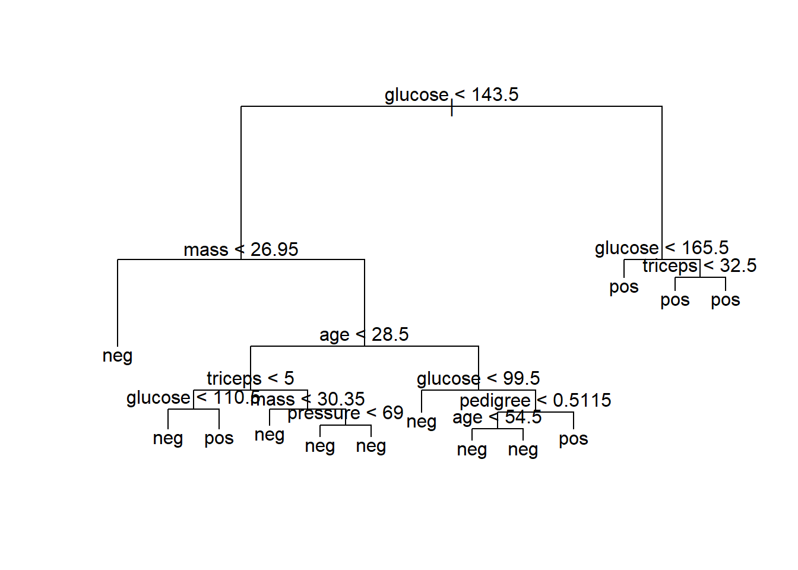
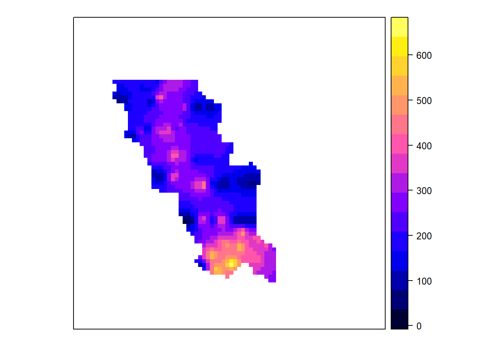
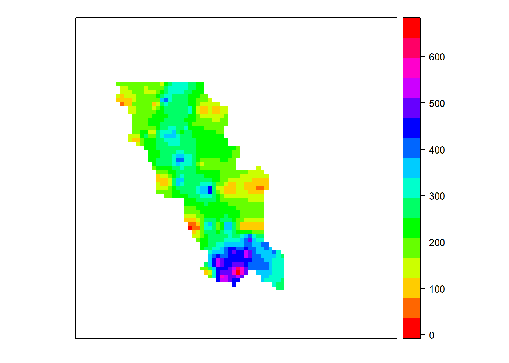

Рандомизация, бутстреп и все-все-все
Decision trees
We now move on to one of the easily interpretable and most popular classifiers there are out there: the decision tree. Decision trees—which look like an upside down tree with the trunk on top and the leaves on the bottom—play an important role in situations where classification decisions have to be transparent and easily understood and explained. It also handles both continuous and categorical predictors, outliers, and irrelevant predictors rather gracefully. Finally, the general ideas behind the algorithms that create decision trees are quite intuitive, though the details can sometimes get hairy.
This is a rather simple decision tree with only three leaves (terminal nodes) and two decision points. Note that the first decision point is (a) on a binary categorical variable, and (b) results in one terminal node, motorcycle. The other branch contains the other decision point, a continuous variable with a split point. This split point was chosen carefully by the decision tree-creating algorithm to result in the most informative split—the one that best classifies the rest of the observations as measured by the misclassification rate of the training data
Actually, in most cases, the decision tree-creating algorithm doesn’t choose a split that results in the lowest misclassification rate of the training data, but chooses on that which minimizes either the Gini coefficient or cross entropy of the remaining training observations. The reasons for this are two-fold: (a) both the Gini coefficient and cross entropy have mathematical properties that make them more easily amendable to numerical optimization, and (b) it generally results in a final tree with less bias.
The overall idea of the decision tree-growing algorithm, recursive splitting, is simple: 1. Step 1: Choose a variable and split point that results in the best classification outcomes. 2. Step 2: For each of the resulting branches, check to see if some stopping criteria is met. If so, leave it alone. If not, move on to next step. 3. Step 3: Repeat Step 1 on the branches that do not meet the stopping criteria.
The stopping criterion is usually either a certain depth, which the tree cannot grow past, or a minimum number of observations, for which a leaf node cannot further classify. Both of these are hyper-parameters (also called tuning parameters) of the decision tree algorithm—just like the k in k-NN—and must be fiddled with in order to achieve the best possible decision tree for classifying an independent dataset. A decision tree, if not kept in check, can grossly overfit the data—returning an enormous and complicated tree with a minimum leaf node size of 1—resulting in a nearly bias-less classification mechanism with prodigious variance. To prevent this, either the tuning parameters must be chosen carefully or a huge tree can be built and cut down to size afterward. The latter technique is generally preferred and is, quite appropriately, called pruning. The most common pruning technique is called cost complexity pruning, where complex parts of the tree that provide little in the way of classification power, as measured by improvement of the final misclassification rate, are cut down and removed. Enough theory—let’s get started! First, we’ll grow a full tree using the PID dataset and plot the result:
library(mlbench)## Warning: package 'mlbench' was built under R version 3.3.3library(tree)## Warning: package 'tree' was built under R version 3.3.3data(PimaIndiansDiabetes)
PID <- PimaIndiansDiabetes
accuracy <- function(predictions, answers){sum((predictions==answers)/(length(answers)))}
ntrain <- round(nrow(PID)*4/5)
train <- sample(1:nrow(PID), ntrain)
training <- PID[train,]
testing <- PID[-train,]
our.big.tree <- tree(diabetes ~ ., data=training)
summary(our.big.tree)##
## Classification tree:
## tree(formula = diabetes ~ ., data = training)
## Variables actually used in tree construction:
## [1] "glucose" "age" "mass" "pregnant"
## Number of terminal nodes: 9
## Residual mean deviance: 0.8441 = 510.7 / 605
## Misclassification error rate: 0.2134 = 131 / 614plot(our.big.tree)
text(our.big.tree)
The power of a decision tree—which is usually not competitive with other classification mechanisms, accuracy-wise—is that the representation of the decision rules are transparent, easy to visualize, and easy to explain. This tree is rather large and unwieldy, which hinders its ability to be understood (or memorized) at a glance. Additionally, for all its complexity, it only achieves an 81% accuracy rate on the training data (as reported by the summary function). We can (and will) do better! Next, we will be investigating the optimal size of the tree employing cross-validation, using the cv.tree function.
set.seed(3)
cv.results <- cv.tree(our.big.tree, FUN=prune.misclass)
plot(cv.results$size, cv.results$dev, type="b")
In the preceding code, we are telling the cv.tree function that we want to prune our tree using the misclassification rate as our objective metric. Then, we are plotting the CV error rate (dev) and a function of tree size (size).
As you can see from the output (shown in Figure 9.9), the optimal size (number of terminal nodes) of the tree seems to be five. However, a tree of size three is not terribly less performant than a tree of size five; so, for ease of visualization, interpretation, and memorization, we will be using a final tree with three terminal nodes. To actually perform the pruning, we will be using the prune.misclass function, which takes the size of the tree as an argument.
pruned.tree <- prune.misclass(our.big.tree, best=3)
plot(pruned.tree)
text(pruned.tree)
# let's test its accuracy
pruned.preds <- predict(pruned.tree, newdata=testing, type="class")
accuracy(pruned.preds, testing[,9])## [1] 0.6948052Rad! A tree so simple it can be easily memorized by medical personnel and achieves the same testing-set accuracy as the unwieldy tree in figure 9.8: 71%! Now the accuracy rate, by itself, is nothing to write home about, particularly because the naïve classifier achieves a 65% accuracy rate. Nevertheless, the fact that a significantly better classifier can be built from two simple rules—closely following the logic physicians employ, anyway—is where decision trees have a huge leg up relative to other techniques. Further, we could have bumped up this accuracy rate with more samples and more careful hyper-parameter tuning.
Random forest
One way to mitigate the shortcomings of decision tree models is by bootstrap aggregation, or bagging. In bagging, you draw bootstrap samples (random samples with replacement) from your data. From each sample, you build a decision tree model. The final model is the average of all the individual decision trees.2 To make this concrete, suppose that x is an input datum, y_i(x) is the output of the ith tree, c(y_1(x), y_2(x), … y_n(x)) is the vector of individual outputs, and y is the output of the final model:
For regression, or for estimating class probabilities, y(x) is the average of the scores returned by the individual trees: y(x) = mean(c(y_1(x), … y_n(x))). For classification, the final model assigns the class that got the most votes from the individual trees.
Bagging decision trees stabilizes the final model by lowering the variance; this improves the accuracy. A bagged ensemble of trees is also less likely to overfit the data.
Bagging classifiers
The proofs that bagging reduces variance are only valid for regression and for estimating class probabilities, not for classifiers (a model that only returns class membership, not class probabilities). Bagging a bad classifier can make it worse. So you definitely want to work over estimated class probabilities, if they’re at all available. But it can be shown that for CART trees (which is the decision tree implementation in R) under mild assumptions, bagging tends to increase classifier accuracy.
The Spambase dataset (also used in chapter 5) provides a good example of the bagging technique. The dataset consists of about 4,600 documents and 57 features that describe the frequency of certain key words and characters. First we’ll train a decision tree to estimate the probability that a given document is spam, and then we’ll evaluate the tree’s deviance (which you’ll recall from discussions in chapters 5 and 7 is similar to variance) and its prediction accuracy.
We’ll write a few convenience functions and train a decision tree, as in the following listing.
spamD <- read.table('https://raw.githubusercontent.com/WinVector/zmPDSwR/master/Spambase/spamD.tsv',header=T,sep='\t')
spamTrain <- subset(spamD,spamD$rgroup>=10)
spamTest <- subset(spamD,spamD$rgroup<10)
spamVars <- setdiff(colnames(spamD),list('rgroup','spam'))
spamFormula <- as.formula(paste('spam=="spam"',
paste(spamVars,collapse=' + '),sep=' ~ '))
loglikelihood <- function(y, py) {
pysmooth <- ifelse(py==0, 1e-12,
ifelse(py==1, 1-1e-12, py))
sum(y * log(pysmooth) + (1-y)*log(1 - pysmooth))
}
accuracyMeasures <- function(pred, truth, name="model") {
dev.norm <- -2*loglikelihood(as.numeric(truth), pred)/length(pred)
ctable <- table(truth=truth,
pred=(pred>0.5))
accuracy <- sum(diag(ctable))/sum(ctable)
precision <- ctable[2,2]/sum(ctable[,2])
recall <- ctable[2,2]/sum(ctable[2,])
f1 <- precision*recall
data.frame(model=name, accuracy=accuracy, f1=f1, dev.norm)
}
library(rpart)
treemodel <- rpart(spamFormula, spamTrain)
accuracyMeasures(predict(treemodel, newdata=spamTrain),
spamTrain$spam=="spam",
name="tree, training")## model accuracy f1 dev.norm
## 1 tree, training 0.9104514 0.7809002 0.5618654accuracyMeasures(predict(treemodel, newdata=spamTest),
spamTest$spam=="spam",
name="tree, test")## model accuracy f1 dev.norm
## 1 tree, test 0.8799127 0.7091151 0.6702857The output of the last two calls to accuracyMeasures() produces the following output. As expected, the accuracy and F1 scores both degrade on the test set, and the deviance increases (we want the deviance to be small):
Now let’s try bagging the decision trees.
ntrain <- dim(spamTrain)[1]
n <- ntrain
ntree <- 100
samples <- sapply(1:ntree,
FUN = function(iter)
{sample(1:ntrain, size=n, replace=T)})
treelist <-lapply(1:ntree,
FUN=function(iter)
{samp <- samples[,iter];
rpart(spamFormula, spamTrain[samp,])})
predict.bag <- function(treelist, newdata) {
preds <- sapply(1:length(treelist),
FUN=function(iter) {
predict(treelist[[iter]], newdata=newdata)})
predsums <- rowSums(preds)
predsums/length(treelist)
}
accuracyMeasures(predict.bag(treelist, newdata=spamTrain),
spamTrain$spam=="spam",
name="bagging, training")## model accuracy f1 dev.norm
## 1 bagging, training 0.9234854 0.8109497 0.4685034accuracyMeasures(predict.bag(treelist, newdata=spamTest),spamTest$spam=="spam",
name="bagging, test")## model accuracy f1 dev.norm
## 1 bagging, test 0.9126638 0.7819273 0.5266863As you see, bagging improves accuracy and F1, and reduces deviance over both the training and test sets when compared to the single decision tree (we’ll see a direct comparison of the scores a little later on). The improvement is more dramatic on the test set: the bagged model has less generalization error3 than the single decision tree. We can further improve model performance by going from bagging to random forests.
Using random forests to further improve prediction
In bagging, the trees are built using randomized datasets, but each tree is built by considering the exact same set of features. This means that all the individual trees are likely to use very similar sets of features (perhaps in a different order or with different split values). Hence, the individual trees will tend to be overly correlated with each other. If there are regions in feature space where one tree tends to make mistakes, then all the trees are likely to make mistakes there, too, diminishing our opportunity for correction. The random forest approach tries to de-correlate the trees by randomizing the set of variables that each tree is allowed to use. For each individual tree in the ensemble, the random forest method does the following:
- Draws a bootstrapped sample from the training data
- For each sample, grows a decision tree, and at each node of the tree
- Randomly draws a subset of mtry variables from the p total features that are available
- Picks the best variable and the best split from that set of mtry variables
- Continues until the tree is fully grown
The final ensemble of trees is then bagged to make the random forest predictions. This is quite involved, but fortunately all done by a single-line random forest call.
By default, the randomForest() function in R draws mtry = p/3 variables at each node for regression trees and m = sqrt(p) variables for classification trees. In theory, random forests aren’t terribly sensitive to the value of mtry. Smaller values will grow the trees faster; but if you have a very large number of variables to choose from, of which only a small fraction are actually useful, then using a larger mtry is better, since with a larger mtry you’re more likely to draw some useful variables at every step of the tree-growing procedure. Continuing from the data in section 9.1, let’s build a spam model using random forests.
library(randomForest)## Warning: package 'randomForest' was built under R version 3.3.3## randomForest 4.6-12## Type rfNews() to see new features/changes/bug fixes.set.seed(5123512)
fmodel <- randomForest(x=spamTrain[,spamVars],
y=spamTrain$spam,
ntree=100,
nodesize=7,
importance=T)
accuracyMeasures(predict(fmodel, newdata=spamTrain[,spamVars],type='prob')[,'spam'], spamTrain$spam=="spam",name="random forest, train")## model accuracy f1 dev.norm
## 1 random forest, train 0.9884142 0.9706611 0.1428786accuracyMeasures(predict(fmodel, newdata=spamTest[,spamVars],type='prob')[,'spam'], spamTest$spam=="spam",name="random forest, test")## model accuracy f1 dev.norm
## 1 random forest, test 0.9541485 0.8845029 0.3972416The random forest model performed dramatically better than the other two models in both training and test. But the random forest’s generalization error was comparable to that of a single decision tree (and almost twice that of the bagged model).
EXAMINING VARIABLE IMPORTANCE
A useful feature of the randomForest() function is its variable importance calculation. Since the algorithm uses a large number of bootstrap samples, each data point x has a corresponding set of out-of-bag samples: those samples that don’t contain the point x. The out-of-bag samples can be used is a way similar to N-fold cross validation, to estimate the accuracy of each tree in the ensemble.
To estimate the “importance” of a variable v, the variable’s values are randomly permuted in the out-of-bag samples, and the corresponding decrease in each tree’s accuracy is estimated. If the average decrease over all the trees is large, then the variable is considered important—its value makes a big difference in predicting the outcome. If the average decrease is small, then the variable doesn’t make much difference to the outcome. The algorithm also measures the decrease in node purity that occurs from splitting on a permuted variable (how this variable affects the quality of the tree).
We can calculate the variable importance by setting importance=T in the random-Forest() call, and then calling the functions importance() and varImpPlot().
varImp <- importance(fmodel)
varImp[1:10, ]## non-spam spam MeanDecreaseAccuracy
## word.freq.make 2.096811 3.7304353 4.334207
## word.freq.address 3.603167 3.9967031 4.977452
## word.freq.all 2.799456 4.9527834 4.924958
## word.freq.3d 3.000273 0.4125932 2.917972
## word.freq.our 9.037946 7.9421391 10.731509
## word.freq.over 5.879377 4.2402613 5.751371
## word.freq.remove 16.637390 13.9331691 17.753122
## word.freq.internet 7.301055 4.4458342 7.947515
## word.freq.order 3.937897 4.3587883 4.866540
## word.freq.mail 5.022432 3.4701224 6.103929
## MeanDecreaseGini
## word.freq.make 5.877954
## word.freq.address 10.081640
## word.freq.all 23.524720
## word.freq.3d 1.550635
## word.freq.our 52.569163
## word.freq.over 11.820391
## word.freq.remove 174.126926
## word.freq.internet 22.578106
## word.freq.order 11.809265
## word.freq.mail 11.127200varImpPlot(fmodel, type=1)Knowing which variables are most important (or at least, which variables contribute the most to the structure of the underlying decision trees) can help you with variable reduction. This is useful not only for building smaller, faster trees, but for choosing variables to be used by another modeling algorithm, if that’s desired. We can reduce the number of variables in this spam example from 57 to 25 without affecting the quality of the final model.
selVars <- names(sort(varImp[,1], decreasing=T))[1:25]
fsel <- randomForest(x=spamTrain[,selVars],y=spamTrain$spam,
ntree=100,
nodesize=7,
importance=T)
accuracyMeasures(predict(fsel,
newdata=spamTrain[,selVars],type='prob')[,'spam'],
spamTrain$spam=="spam",name="RF small, train")## model accuracy f1 dev.norm
## 1 RF small, train 0.9864832 0.9658047 0.1379438accuracyMeasures(predict(fsel,
newdata=spamTest[,selVars],type='prob')[,'spam'],
spamTest$spam == "spam", name="RF small, test" )## model accuracy f1 dev.norm
## 1 RF small, test 0.9497817 0.8742775 0.3985712The smaller model performs just as well as the random forest model built using all 57 variables.
Bagging and random forest takeaways
Here’s what you should remember about bagging and random forests:
Bagging stabilizes decision trees and improves accuracy by reducing variance. Bagging reduces generalization error. Random forests further improve decision tree performance by de-correlating the individual trees in the bagging ensemble. Random forests’ variable importance measures can help you determine which variables are contributing the most strongly to your model. Because the trees in a random forest ensemble are unpruned and potentially quite deep, there’s still a danger of overfitting. Be sure to evaluate the model on holdout data to get a better estimate of model performance. Bagging and random forests are after-the-fact improvements we can try in order to improve model outputs. In our next section, we’ll work with generalized additive models, which work to improve how model inputs are used.
Методы геостатистики
Пойма долины реки Геул, расположенной на юге Нидерландов, сильно загрязнена тяжелыми металлами. Из-за развития в прошлом металлодобывающей промышленности произошло загрязнение аллювиальных почв свинцом, цинком и кадмием. Каждый раз, когда река затапливала долину, на речных берегах откладывались загрязненные отложения. Загрязняющие вещества могут затруднять использование этих земель, поэтому требуются подробные карты, где показаны зоны с высокой концентрацией тяжелых металлов.
Данные
Данные, которые мы будем использовать для построения карт:
* geuldata.txt - файл ASCII с 100 точками, где указана концентрация свинца и географические координат точек; mask_aoi_shp.xxx - это шейп- файлы, очерчивающие территорию исследования; river_line.xxx - это шейп- файлы, показывающие реку Геул; geul_mask.txt – файл-маска, растровая карта, очерчивающие территорию исследования; geul_dem.txt - цифровая модель рельефа (ЦМР) исследуемой территории; geul_slope.txt – карта уклонов местности, полученная из ЦМР; river_dist.txt - растровая карта, где показано кратчайшее расстояние до реки Геул для каждой ячейки сетки.
Файл-маска, очерчивающая территорию исследования или какой-либо объект - это ASCII файл, в котором закодирован растр, там указано: количество строк и столбцов, координаты первой ячейки; число, которым обозначают отсутствие данных (-9999), и сама матрица, где единицами отмечены значимые пикселы (объект), а значениями -9999 – пикселы, не относящиеся к объекту. Таким образом, можно проводить обработку объектов со сложной конфигурацией.
Для работы мы будем использовать широкий список пакетов для работы с геопривязанными растрами, картами и статистическим анализом географических данных
## подключаем необходимые пакеты
library(sp)## Warning: package 'sp' was built under R version 3.3.3library(sf)## Warning: package 'sf' was built under R version 3.3.3## Linking to GEOS 3.5.0, GDAL 2.1.1, proj.4 4.9.3library(rgdal)## Warning: package 'rgdal' was built under R version 3.3.3## rgdal: version: 1.2-5, (SVN revision 648)
## Geospatial Data Abstraction Library extensions to R successfully loaded
## Loaded GDAL runtime: GDAL 2.0.1, released 2015/09/15
## Path to GDAL shared files: C:/RLibraries/rgdal/gdal
## Loaded PROJ.4 runtime: Rel. 4.9.2, 08 September 2015, [PJ_VERSION: 492]
## Path to PROJ.4 shared files: C:/RLibraries/rgdal/proj
## Linking to sp version: 1.2-4library(maptools)## Warning: package 'maptools' was built under R version 3.3.3## Checking rgeos availability: TRUElibrary(gstat)## Warning: package 'gstat' was built under R version 3.3.3library(rgeos)## Warning: package 'rgeos' was built under R version 3.3.3## rgeos version: 0.3-22, (SVN revision 544)
## GEOS runtime version: 3.5.0-CAPI-1.9.0 r4084
## Linking to sp version: 1.2-4
## Polygon checking: TRUElibrary(MASS)## Warning: package 'MASS' was built under R version 3.3.3Загрузим данные с формами территории изучаемой местности:
geul <- read.table("https://www.dropbox.com/s/q77agu5bigcwwbg/geuldata.txt?dl=1", header = TRUE)Пакет sp предоставляет возможности для отображения пространственных объектов. С помощью команды coordinates(переменная) = ~x+y можно преобразовать таблицу (фрейм) в пространственные данные, указывая, что пременные x и y в таблице это координаты. Поэтому мы сможем отобразить часть данных таблицы в виде картограммы:
coordinates(geul) <- ~x+y
plot(geul)С помощью команды spplot(пространственная переменная), состоящей из слов spatial + plot, можно отобразить разнообразные пространственные объекты. Для понимания это команды изучим ее параметры последовательно
spplot(geul)Если в таблице помимо координат есть несколько переменных, то в параметрах нужно указать, какую переменную отображать. В данном случае это необязательно. Функция spplot обладает широким рядом параметров, которые позволяют настроить большое количество отображаемых параметров картосхемы:
spplot(geul, zcol = "pb", xlim = c(190000,192000), ylim = c(314000,316000), cex = 1.5, main = "Pb data",
key.space = list(x = 0.02, y = 0.26, corner = c(0,1)),
scales=list(draw=TRUE))
С помощью команд st_read пакета sf можно загружать в RStudio (считывать) шейп-файлы с полигонами и линиями. К сожалению, эта фнукция корректно работает только с локальными файлами, т.к. по сути она считывает два файла и ище подобный файл по имени данного ей файла, поэтому нам придется предварительно скачать файлы функцией download.file()
download.file("https://www.dropbox.com/s/67vtttr1uj7en39/mask_aoi_shp.shp?dl=1", destfile = "./mask_aoi_shp.shp", mode="wb")
download.file("https://www.dropbox.com/s/2ry4uwbre6haqvi/river_line.shp?dl=1", destfile = "./river_line.shp", mode="wb")
download.file("https://www.dropbox.com/s/pyi0tptksx0rpjn/mask_aoi_shp.dbf?dl=1", destfile = "./mask_aoi_shp.dbf", mode="wb")
download.file("https://www.dropbox.com/s/zito4qcq1mtbyp3/mask_aoi_shp.prj?dl=1", destfile = "./mask_aoi_shp.prj", mode="wb")
download.file("https://www.dropbox.com/s/9b5j4skfeu877cr/mask_aoi_shp.shx?dl=1", destfile = "./mask_aoi_shp.shx", mode="wb")
download.file("https://www.dropbox.com/s/9q8w7dzczghvsus/river_line.shx?dl=1", destfile = "./river_line.shx", mode="wb")
download.file("https://www.dropbox.com/s/73htull4j5u3mlr/river_line.dbf?dl=1", destfile = "./iver_line.dbf", mode="wb")
download.file("https://www.dropbox.com/s/ffo94fswywjezl9/river_line.prj?dl=1", destfile = "./river_line.pr", mode="wb")
studarea <- readShapePoly("mask_aoi_shp.shp")## Warning: use rgdal::readOGR or sf::st_readriverline <- readShapeLines("river_line.shp")## Warning: use rgdal::readOGR or sf::st_readТеперь объединим на одном рисунке и полигон, показывающий изучаемую территорию, и линию реки. Для этого объединим объекты в список:
spplot(geul, zcol = "pb", xlim = c(190000,192000), ylim = c(314000,316000), cex = 1.5, main = "Pb data",
key.space = list(x = 0.02, y = 0.26, corner = c(0,1)),
sp.layout = list(list("sp.polygons", studarea, col= "red"),
list("sp.lines", riverline, col="blue", lwd=2)),
scales=list(draw=T))
Пакет gstat работает с переменными, определенными специальным образом. Такие переменные называются gstat objects или объекты пакета gstat. Общий вид впервые создаваемого объекта пакета gstat для одной переменной выглядит следующим образом (большая часть параметров не указана):
gstat(formula, data, model = NULL)
Параметр formula определяет зависимую переменную (отклик) и независимые переменные. Выбор формулы зависит от выбранного метода интерполяции. В данном случае мы будем использовать формулу для простого и ординарного кригинга вида z~1, где z – это экологическая или почвенная переменная, пространственное распределение которой нужно предсказать, а независимых переменных нет. Параметр data указывает на пространственный фрейм данных, где содержатся исходные данные: координаты точек, зависимая переменная и независимые переменные (если они есть).
gpb = gstat(formula = pb~1, data = geul)
vgpb <- variogram(gpb)
vgmpb <- vgm(nugget = 5000, psill = 25000, range = 400, model = "Sph")
vgmpb <- fit.variogram(vgpb, vgmpb, fit.method=7)Интерполяция точечных данных методом обратных расстояний
Метод обратных расстояний или метод обратных взвешенных расстояний (IDW - Inverse Distance Weighting) предполагает, что объекты, которые находятся поблизости, более похожи, чем объекты, удаленные друг от друга; при этом каждая точка пробоотбора оказывает «локальное влияние», которое уменьшается с увеличением расстояния. При расчете значения в точке, где не было пробоотбора, используются точки, значения показателя в которых известны, при этом вес точек стремительно уменьшается как функция от расстояния. Поэтому метод носит название обратных взвешенных расстояний. Интерполяция методом обратных расстояний осуществляется с помощью функции krige из библиотеки gstat. В результате интерполяции создается, так называемый «грид-файл», где значения предсказываются в узлах регулярной сетки. В качестве параметров функции krige указывается зависимая переменная с помощью параметра formula, задаются координаты и исходные данные с помощью параметра locations и подгружается маска, где указаны границы участка, с помощью параметра newdata. Маска - это текстовый фрейм, в котором указано, сколько нужно получить строк, сколько столбцов, координаты первой точки (левого верхнего угла); число, обозначающее, что нет данных (-9999) и далее приведена матрица, где единицами отмечены точки, в которых должны быть предсказаны значения, а числом -9999 помечены точки, где значения предсказывать не нужно, так как они выходят за границы участка.
Затем запускаем команду krige, позволяющую провести интерполяцию методом обратных расстояний. Значения будут предсказаны только в точках, которые помечены единицами в маске.
download.file("https://www.dropbox.com/s/e6yarwp4y51pdx3/geul_mask.txt?dl=1", destfile = "./geul_mask.txt", mode="wb")
mask <- readGDAL("geul_mask.txt")## geul_mask.txt has GDAL driver AAIGrid
## and has 80 rows and 80 columnsgeul.idw <- krige(formula = pb~1, locations = geul, newdata = mask)## [inverse distance weighted interpolation]В фрейме geul.idw содержатся две пространственные переменные: var1.pred и var1.var. В переменной var1.pred (= prediction) содержатся предсказанные значения зависимой переменной (отклика), в данном случае содержание свинца. В переменной var1.var (= variance) должна быть указана дисперсия (квадрат ошибки) предсказания. Так как метод обратных расстояний не позволяет получить такую информацию, то в переменной var1.var указано, что значения отсутствуют. Так как в пространственном фрейме geul.idw содержатся две переменных, они и были нарисованы. Воспользуемся параметром zcol для того, чтобы на картограмме была только одна нужная переменная.
spplot(geul.idw, zcol = "var1.pred")
С помощью параметра col.regions можно задавать разные палитры заливки картограммы. Например, воспользуемся палитрой «радуга» и вновь нарисуем картограмму:
spplot(geul.idw, zcol = "var1.pred", col.regions = rainbow(15) )
spplot(geul.idw, zcol = "var1.pred", col.regions = bpy.colors(), xlim=c(190200,191300), ylim=c(314300,315600), main="IDW Pb predictions [ppm] with river",
sp.layout = list("sp.lines", riverline, col="lightblue", lwd=2))
Интерполяция точечных данных методом ординарного кригинга (теория)
Кригинг - ключевой метод геостатистики для анализа пространственно-распределенных данных. Он основывается на гипотезе о пространственной однородности («стационарности 2-го порядка»). Важным преимуществом кригинга является то, что предсказывается не только среднее значение экологической переменной в точке, но и ее возможный разброс. Чаще всего результаты оформляются в виде предсказанных значений и ошибки предсказания.
Интерполяция методом кригинга предполагает, что пространственные изменения значений экологической переменной Z(х) в точках х в общем случае являются суммой трех компонент:
\[Z(x)= m(x)+e(x)+ \sigma\]
- где m(x) - структурная (неслучайная) компонента, которая может быть описана какой-либо математической функцией;
- e(x) - случайная, но пространственно-коррелированная компонента. (Отклонения являются случайными, но связанными друг с другом пространственно). Предположения, которые делаются относительно данной компоненты: -среднее всех e(x)=0; - дисперсия значений e(x) и e(x+h) в любых точках x и (x+h) зависят от смещения h, то есть от расстояния между точками, но не зависят от местоположения точек;
- $$ - случайный шум, не связанный с общей тенденцией и не имеющий пространственной автокорреляции, называется еще остаточная ошибка.
В зависимости от природы m(x) различают следующие виды кригинга:
- ординарный: m – неизвестная константа, то есть неизвестное постоянное среднее всех значений Z(x);
- простой: m – известная константа (среднее);
- универсальный: m – некоторая детерминистская функция, называемая трендом.
В методе кригинга для определения неизвестного значения в некоторой точке значения исходных точек (опорных точек, точек пробоотбора), попавших в некую окрестность вокруг обрабатываемой точки, взвешиваются.
В отличия метода обратных расстояний веса зависят не только от расстояния между опорной точкой и искомой, но и от пространственной структуры данных в целом (компонента e(x)).
Поэтому кригинг включает 2 основные задачи:
- установить пространственную структуру данных - подобрать к данным модель пространственной изменчивости (семивариограмму);
- провести интерполяцию, используя параметры модели семивариограммы.
Построение семивариограммы и подбор оптимальных параметров модели
Семивариограмма (или вариограмма) - это функция, которая связывает различие в значениях опорных точек и расстояние, на которое они отстоят друг от друга. Она служит средством для исследования пространственной автокорреляции (то есть пространственных связей) между точками. По оси x откладывается расстояние между точками (в метрах, км или др.). По оси y – усредненная дисперсия разности значений в точках, находящихся на данном расстоянии. Если по оси y отложена дисперсия для разности всех пар точек, то такой график называется «вариационное облако».
vgpb1 = variogram(gpb, cloud=TRUE)
plot (vgpb1)
Ординарный кригинг
Используйте команду fit.variogram для того, чтобы подобрать оптимальные параметры семивариограммы. Интерполяцию методом ординарного кригинга можно провести с помощью функции krige из библиотеки gstat. Одним из аргументов является, как уже отмечалось ранее, newdata, где вы определяете пространственные границы экстраполяции. Для этого можно использовать данные файла geul_mask.txt. Среди параметров обязательным является model, задающий параметры модели семивариограммы.
mask <- readGDAL("geul_mask.txt")## geul_mask.txt has GDAL driver AAIGrid
## and has 80 rows and 80 columnsvgmpb <- vgm(nugget = 5000, psill = 25000, range = 400, model = "Sph")
vgmpb <- fit.variogram(vgpb, vgmpb, fit.method=7)
geul.krig <- krige(formula = pb~1, locations = geul, newdata = mask, model= vgmpb)## [using ordinary kriging]geul.krig$var1.sd <- sqrt(geul.krig$var1.var)
spplot(geul.krig, zcol=c("var1.pred","var1.sd"))
spplot(geul.krig, zcol = "var1.sd", col.regions = bpy.colors(), main="st dev [ppm]", xlim=c(190200,191300), ylim=c(314300,315600), sp.layout=list("sp.points",geul, pch=1, cex=2))
Для того, чтобы сравнить карты нужно расположить их рядом. Для этого добавим в файл geul.krig еще одну переменную idw, в которую перепишем предсказанные значения методом обратных расстояния. Убедимся, что переменная добавилась с помощью команды names и визуализируем карты.
geul.krig$idw=geul.idw$var1.pred
names(geul.krig)## [1] "var1.pred" "var1.var" "var1.sd" "idw"spplot(geul.krig, zcol=c("var1.pred","idw"))